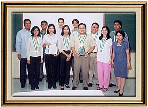

|
Ten
ITP's Receive Recognition
By:
Francis Mark M. Santos
Providing
quality IT resources and services for the University is difficult
and challenging but, also a very fulfilling job. As if it
was not rewarding enough,
nine ITPs received recognition from the DLS-Professional Schools, Inc. in their Annual Recognition Day at the Ariston
Estrada Seminar Room last
August 21, 2002. Due recognition are granted to deserving
faculty members from the College of Computer Studies, Graduate
Schools of Business and Information Technology Personnel who
rendered an exemplary job and dedicated years of service to
the University.
Leading
off the cast of awardees, Rhaniel Bingcang collected his third
consecutive ITP Award of Excellence, a Grand Slam trophy so
to speak. He also received an award for Techical Support,
given to ITPs reclassified to Level 2 status.
Rowena
Santos is the lone 10-yr service awardee. Other awardees were
Glen Bertulfo from the Computer Facilities and Operations,
Lemuel Cabia and Francis Mark Santos from the Documentation
Office, Amalia Salcedo from the Process Review and Improvement
Office and Lorna Acorda, Brian Co and Loveleah Mallari from
the Systems Management Office. Mary Jean Soria of the Computer
Facilities and Operations received her second consecutive
Perfect Attendance Award.
Congratulations
to all the awardees and may you all continue in fulfilling
all your duties guided by the Gospel values, the Charism of
St. John Baptist de La Salle, and the traditions of Religio,
Mores, et Cultura.
Take
a look at some shots from the awarding...
Let's
hear it from the Newbies on the block
Robert
"Bobby" De Jesus (SMO)
I’ve
been working here at DLSU for only a month now and I wish
I know more about you guys (ITC) so I could easily write this
article. Well, I can say that as a group you guys look like
a happy bunch and you made me feel welcome. It’s nice
to know that some of you have been with DLSU for quite a while.
This could only mean that La Salle is doing something right.
I’m still unfamiliar with most of you, so if you see
me in the corridor and I just passed you by or I forgot your
name or mistook you for someone else, it’s unintentional.
One thing is sure though, I won’t mistake JOC for BOC
Mabini
"Bernie" Liwanag (CF0)
Since
I'm into the field of IT, the first thing that got my attention
and my interest was the system setup of DLSU,specifically,
the system that is directly being maintained by ITC. It is
big and more advanced than other universities, colleges and
private companies. Also, all of the ITPs are nice and responsible
Amor
Calvin B. Camba (CFO)
Being
an Information Technologist for almost 7 years (if my calculation
is correct using Differential Equation), it is my great honor
and privilege to be part of the growing team of IT professionals
in Information Technology Center of De La Salle University.
For the past several weeks being with the elite Center, I
constantly adhere myself with the latest and one of the best
information and communication technologies which are of great
value in terms of bridging pedagogy with technology. In this
regard, I can say that in the near future the Center will
be the central hub of educational technology in the Philippines.
Animo La Salle!
Solomon
"Mon" Cuas
My
stay here at DLS-PSI has been a pleasant one. Al of my co-workers
are very friendly and supportive. It's as if I have found
a new home. I could never ask for a better working environment.
|